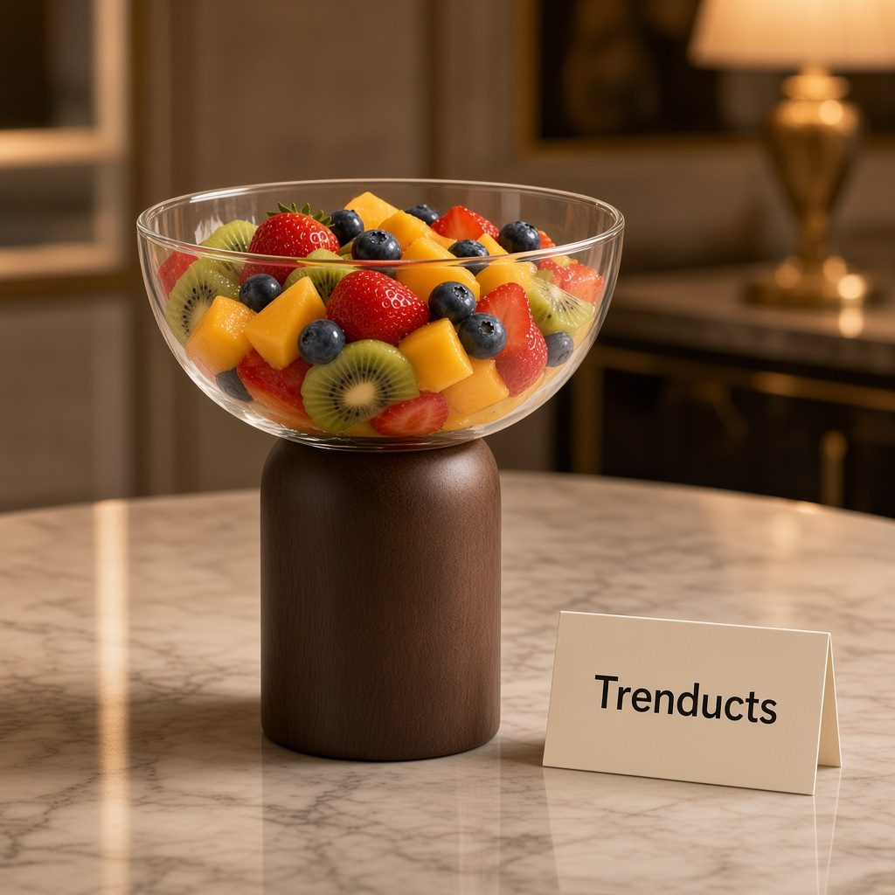
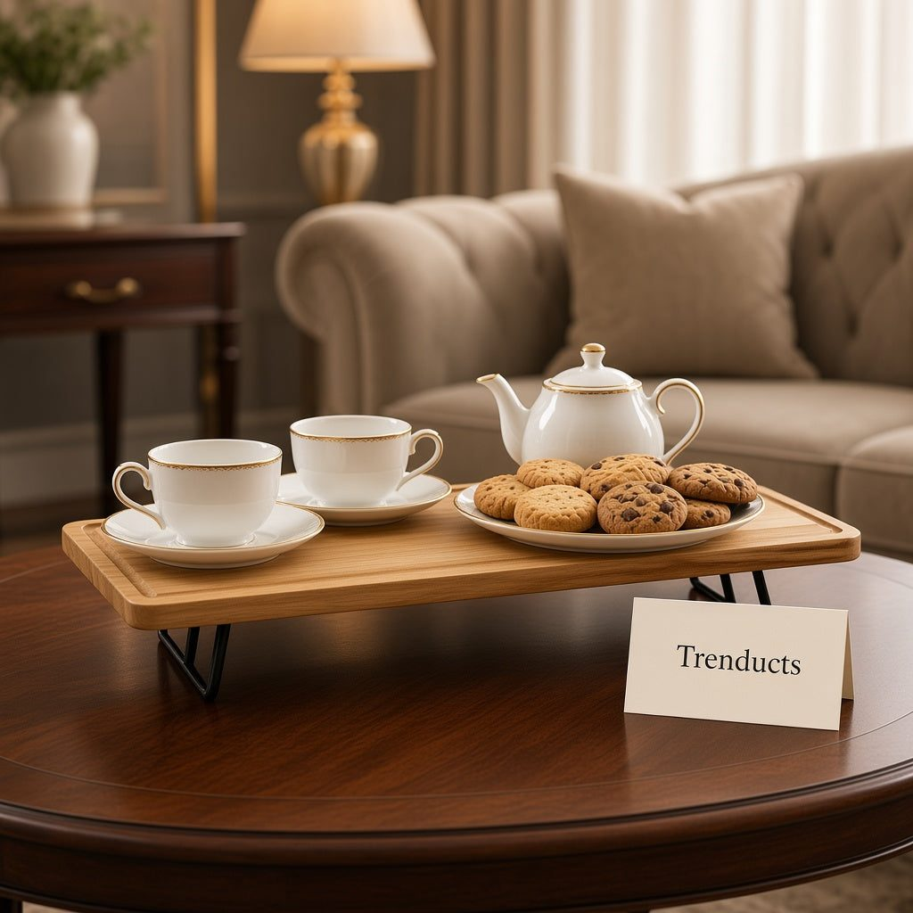

Birthday parties at banquet halls and play areas have become popular in Pakistani cities, but many families still prefer celebrating at home. It is more personal, grandparents can relax in familiar surroundings, and children often have more fun running around their own house than a crowded venue. It also gives you full control over food and budget.
The challenge is making the home table look festive without spending days on preparation. Here is a calm, step-by-step approach.
Decide the type of party first
A children's afternoon party needs very different food and serving from an evening family dinner for an adult's birthday. Decide early:
- Is it a sit-down meal or a standing buffet?
- How many guests, roughly, and how many children?
- Will the cake be the centrepiece, or will there be a full meal?
This shapes everything else, including how many serving pieces you need.
Choose one spot for the main table
Pick one table, usually the dining table, as the focus. Push it against a wall if space is tight, so guests approach from one side and the wall becomes a backdrop for balloons or a banner. Keep a second small table or trolley nearby for drinks, so people do not crowd around the food.
Layer heights for a festive look
Party tables look best when not everything sits flat. Use a cake stand or a pedestal bowl for the centrepiece, a long wooden tray on a stand for snacks, and flat platters around them. Even an upturned sturdy bowl under a tray works in a pinch. Varied heights make a modest spread look generous and help guests see every dish.

Food that works for a home party
Most families mix homemade and bought items. Ideas that are easy to serve:
- Chicken sandwiches and mini burgers on a long platter.
- Shami kababs or nuggets with ketchup and chutney in small bowls.
- Chaat or dahi baray in individual cups for easy eating.
- Fries or chips in a large bowl for children.
- Fruit skewers or a fruit chaat bowl for a lighter option.
- The cake, plus a few cupcakes for those who want seconds.
Keep finger food easy to pick up, especially for children, who will mostly eat with their hands while running around.
Serving pieces you actually need
You do not need a cupboard full of party ware. A practical set includes one centrepiece stand, two or three trays or long platters, a few medium bowls for snacks and chutneys, and enough small plates and napkins for everyone. Bowl sets with a tray hold dips neatly together, and a glass bowl on a pedestal makes a simple dessert or salad look special.
Theme without overspending
Pick two colours and stick to them across balloons, napkins and table cover. A child's favourite cartoon or colour is usually enough of a theme. Keep decor on the wall behind the table and on the edges, leaving the surface free for food.

Timing on the day
- Morning: set up the table, cover it and place empty serving pieces so you know where everything goes.
- Two hours before: prepare cold items and keep them refrigerated.
- One hour before: fry or heat hot items in batches.
- As guests arrive: bring out snacks and drinks first.
- Cake time: clear a little space at the centre and gather everyone.
- After cake: bring out remaining food and desserts.
Cleanup made easier
Place a lined bin near the party area so guests can throw away used plates. Soak trays and bowls as soon as they are empty. Ask a family member to collect cups during the party rather than leaving them all for the end.
Building a party collection
If you host often, investing in a few reusable serving pieces pays off over plastic disposables. Browse tableware and serving pieces on Trenducts.pk, including trays on stands, pedestal bowls and bowl sets, delivered across Pakistan.
The memory, not the perfection
Children remember the cake, the friends and the games. Adults remember a relaxed host. Keep the table simple, plan the timing and let the celebration take care of itself.